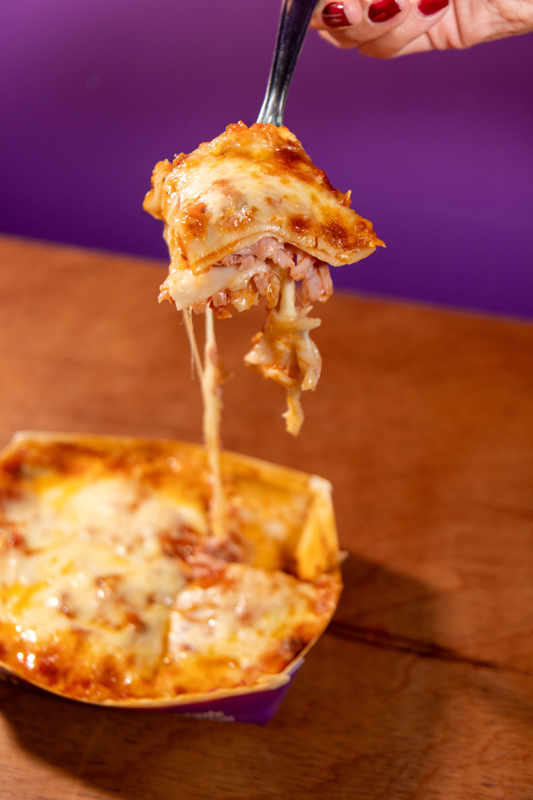

Lasagna

Description
Classic lasagna is a hearty Italian dish made with layers of pasta, rich
meat sauce, creamy béchamel or ricotta, and melted cheese. It's a
comforting meal that's perfect for family dinners or special occasions.
Although it takes a little time to prepare, the result is a flavorful,
cheesy, and satisfying dish that's well worth the effort.
Ingredients
- Lasagna noodles
- Ground beef
- Onion
- Garlic
- Tomato sauce
- Tomato paste
- Ricotta cheese
- Mozzarella cheese
- Parmesan cheese
- Egg
- Olive oil
- Italian seasoning
- Salt
- Black Pepper
- Fresh parsley (optional)
Steps
- Preheat the oven to 375°F (190°C).
- Cook the lasagna noodles according to the package instructions.
- Cook the ground beef with chopped onion and garlic until browned.
-
Stir in the tomato sauce, tomato paste, and seasonings, then let the
sauce simmer.
- Mix the ricotta cheese with the egg and a little Parmesan cheese.
- Spread a thin layer of meat sauce in a baking dish.
-
Layer the noodles, ricotta mixture, meat sauce, and mozzarella cheese.
- Repeat the layers until all the ingredients are used.
- Finish with a generous layer of mozzarella and Parmesan cheese.
- Bake for 40–45 minutes until the cheese is golden and bubbling.
-
Let the lasagna rest for 10–15 minutes before slicing and serving.
Home